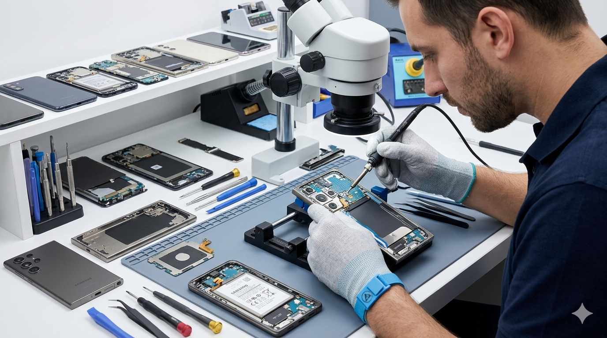

Hardware Lab
Precision diagnostics and advanced microsoldering.
Our Capabilities
We execute advanced repairs under high-magnification microscopy, including logic board diagnostics, FPC connector replacements, and data recovery on water-damaged devices (process shown below).

● Actively Testing
Microsoldering
Jumper wire solutions and BGA reballing.
Screen Refurbishing
OLED and LCD bonding for high-end mobile devices.